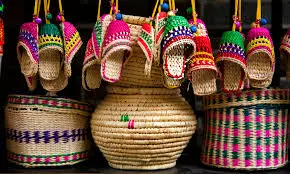
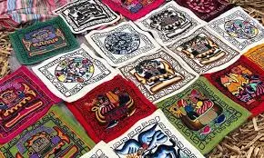
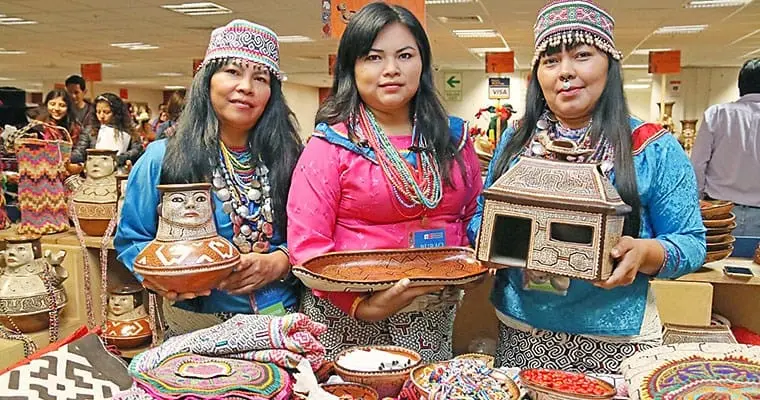

Featured Artisans

Rogelio Quispe
Master weaver from Cusco preserving Inca textile traditions.

Roberto Mamani
Renowned ceramicist blending ancient Moche styles with modern design.

Rosa Shahuano, Maria Ramon, Carla Cordova
Amazonian craftswomen creating jewelry from seeds and plant fibers.